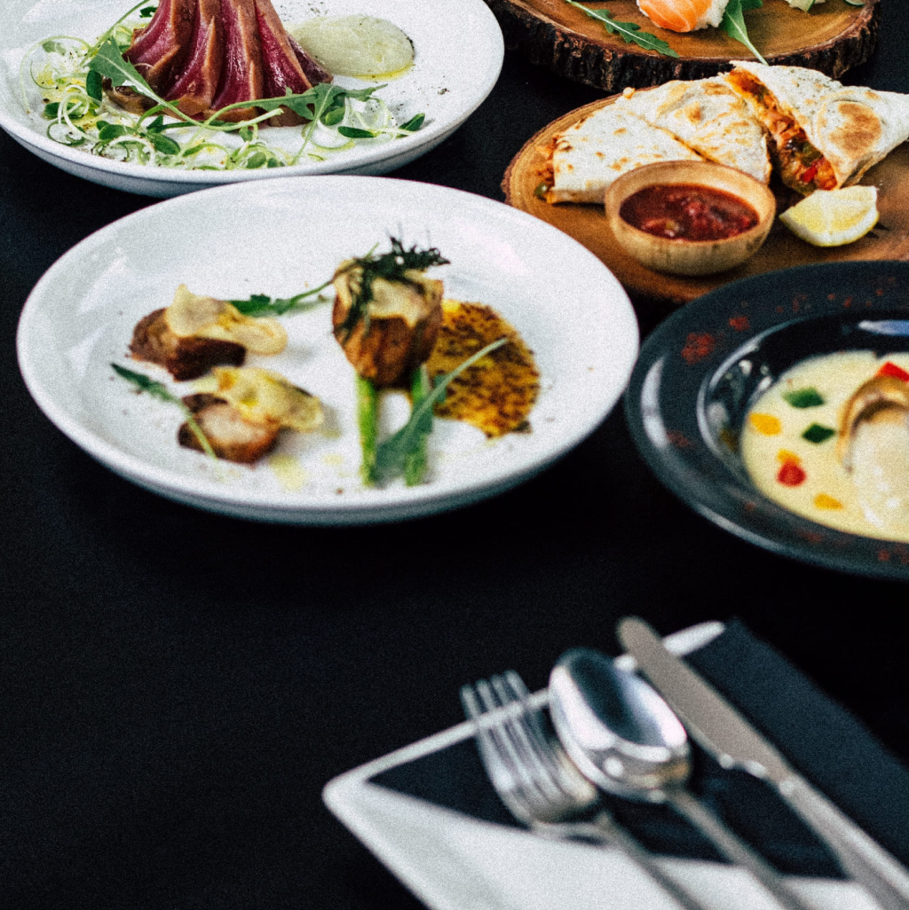

Romaliya

Butter-Poached Lobster
Chocolate Ball On Cake
Duck Breast with Cherry Sauce

Premium abalone slowly braised in a rich savory sauce until tender and flavorfu
Tender sliced pork stir-fried with vegetables in a fragrant spicy sauce.
Classic diced chicken wok-fried with peanuts, dried chilies, and vegetables in a savory-spicy sauce.
Fresh sushi rolls filled with crab, avocado, cucumber, and creamy mayonnaise.
Fresh mussels steamed with garlic, herbs, and white wine for a delicate seafood flavor.
A delicious combination of Cantonese barbecue pork and an assortment of freshly prepared sushi.